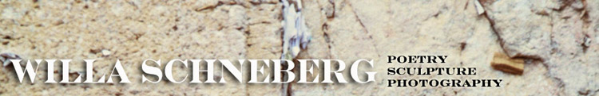
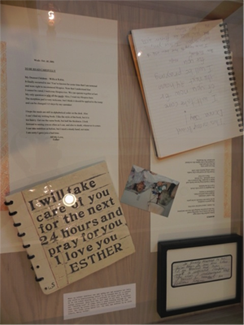
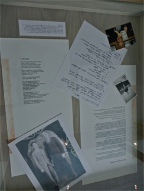

Rending the Garment
|
|
Available from the Author,
Small Press Distribution, Powells Books. and Broadway Books
Willa's genre-busting collection was released from Mudfish/ Box Turtle Press, New York City this May. Rending the Garment is a narrative tapestry encompassing persona poems, prose poems, flash fiction, imagined meetings with historical figures, ancestral appearances, and ephemera. It is a series of linked poems exploring the life and times of one Jewish family. |
Cover Comments, Intros, Reviews and Profiles
"Rending the Garment tells a familiar tale: the Jewish immigrant family romance, but with an important difference. Using shifting points of view and narrative interruptions, biographical essays, scolding notes from school principals, diary entries, not to mention a cast of characters as lively as a Borscht Belt revue, Willa Schneberg tells her story from the inside, where grief and love live side by side in bed “neither old nor young,” bodies outside of time… A fresh, original and moving addition to our literature."
Philip Schultz, Pulitzer Prize Winner for Failure
Rending the Garment draws us intimately into one family—and through them into the world of immigrant Jews born almost a century ago and their lives in America. Willa Schneberg has a fine ear and her poems capture their voices, their cadences, the way they think, mixing Yiddish with English, the old and the new. The people of her poems come alive on the page: irreverent, beautiful, flawed, funny, sad, loving, opinionated, stubborn, real. They embody a wealth of contradictions, perfectly exemplified in these lines that her mother--who smoked so glamorously and lost her voice to cancer--writes in a notebook near the end of her life, "I’m Jewish./There is no God." I recognize these people and I’ve come to care for them deeply.
Ellen Bass, author of The Human Line and the forthcoming Like a Beggar
Glyph Cafe Reading
Robin Becker, author of Tiger Heron
In one memorable episode in Willa Schneberg’s Rending the Garment, the author’s dying mother sits by the hospital bed of the Israeli poet Abba Kovner. "Stars don’t go out when we die,"he writes on her notepad. "Now you’re talking," she writes in reply. This funny, poignant imagined moment is representative of the moments Schneberg has gathered to create her richly woven memoir in poetry of a loving, contentious Jewish family and the world they lived in of junk men, corset shops, and immigrant ambitions.
Lee Sharkey, author of Calendars of Fire and co-editor of the Beloit Poetry Journal
Support Independent Bookstores! Robert Dyer, co-owner of Broadway Books in Portland introduced Willa's May 13th reading at the store. Here are her eloquent words:
Good evening and welcome to Broadway Books. I’m Roberta Dyer, co-owner of the store with Sally McPherson. Working with me tonight is Karin Anna. We are all glad you have chosen to join us tonight to hear Willa Schneberg read from her latest poetry collection, Rending the Garment.
Willa Schneberg and Broadway Books have a long history, and it’s a happy one. I think she first did a reading for us more than 10 years ago, and she has read here many times since then. I always love to have her present her work at the store, because she has something interesting to say. Believe it or not, this isn’t the case with every author we have hosted. But it is always the case with Willa. Her poetry is direct and personal and accessible like good poetry should be. As a writer, Willa experiments with many forms. This new book includes prose poems, flash fiction, imagined meetings with historical figures, biographical essays, scolding notes, ancestral appearances and other (sometimes ephemeral) devices.
Another form that Willa uses often is the persona poem, wherein she assumes the character of a particular person and speaks with the voices, It’s a marvelous form, and in my opinion, she is a master at using it.
Several times I have heard Willa read persona poems about her parents, and here’s the thing: I never met Willa’s parents, but I know them. And I love them. They are opinionated, flawed, funny, sad, beautiful, stubborn, irreverent, sarcastic, smart, Jewish and real. I recognize these people. Because my parents were all of these things, too, except Jewish. It turns out that Jews from Brooklyn can have much in common with Presbyterians from rural Indiana. And loving parents have much in common with other loving parents no matter where they are from.
My parents are gone now, but they live in my memory. Willa’s parents are gone, too, but they live in her memory. And because she is such a talented writer, her parents, live in my memory also, and in the memories of everyone who reads Willa’s work or hears her present it. These memories are a gift that Willa shares with us. I am grateful for it. And I hope we hear a little more from Esther tonight. This is Willa’s fifth book of poetry. She is the recipient of the Oregon Book Award in Poetry. Her work has been read by Garrison Keillor on the Writer’s Almanac on public radio. She has been a fellow at Yaddo and the MacDowell Colony. She is also a visual artist whose work was featured at the Oregon Jewish Museum and elsewhere, and in her spare time she is a social worker in private practice here in Portland.
We are thrilled to have you back, Willa. Everyone: please join me in welcoming her.
|  |  | |
| Esther's Last Days | Willa in Cambodia | Ben's Bar Mitzvah |
One of the things that have kept striking me about Willa's memoir: While many (most?) of us let the ambivalence of family, the rhapsody and the rage (spoken or un-), censor us, Willa strides ahead and embraces the whole of it. We'd like our parents and our story to be a clear pool we can simply look into, and yet that never happens. We have to clarify it ourselves, partly by agitating its surface, and Willa has gotten in there and stirred it up so the poetry and the prose can limn it for the world. I so admire this new book and can think of so many people I'd like to give it to.
--Virginia Euwer Wolff, National Book Award Winner for True Believer
Somerville, Armory Reading, MA
Willa is featured in Cheryl LaGuardia’s Library Journal column.
Bette Mandl’s review appears in the Summer 2014 Issue of Calyx Journal: A Journal of Art and Literature By Women.
Sara Budzik's review can be found at Foreword Reviews: great books Independent Voices
Eleanor Berry's review can be found on the Oregon Poetry Association's website.
Patricia Bollin's review can be found at Goodreads.
Sue Lick’s review can be found at Goodreads.
A.L. Adams Profile can be found in The Portland Mercury.
“Alterations” from Rending the Garment can be found in The Oregonian.
Carolyn Martin’s review can be found on Glyph Cafe’s Review Journal
Paul Haist's review, Oregon Jewish Life - September 2014 (Oregon Jewish Life Magazine)
Rosenblatt’s review can be found on the Boston Area Small Press and Poetry Scene.